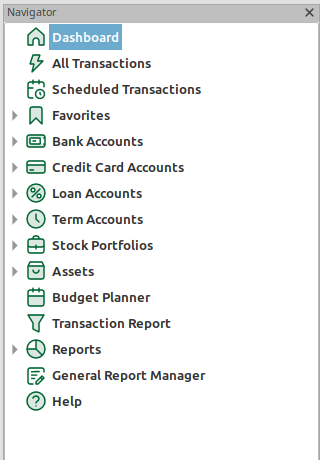
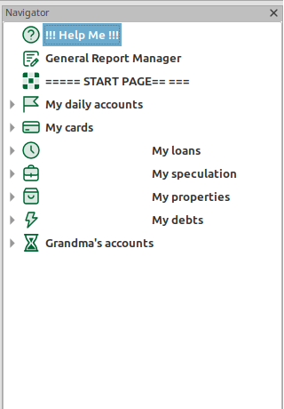
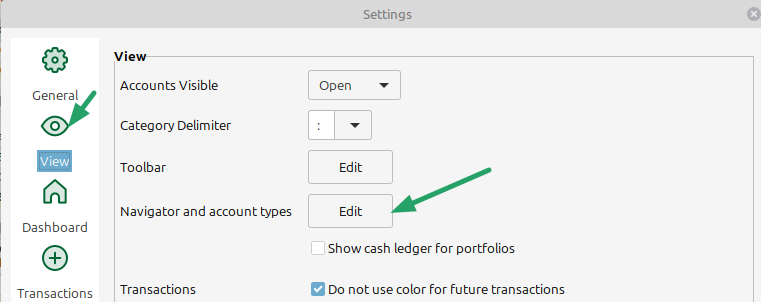
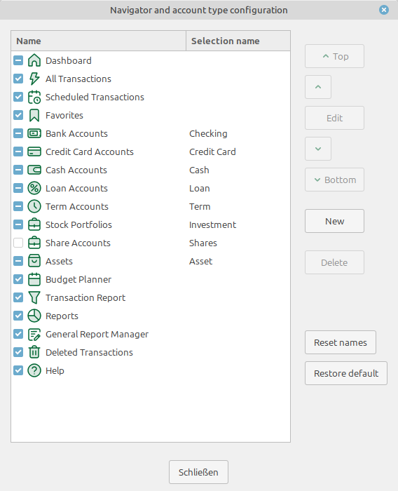
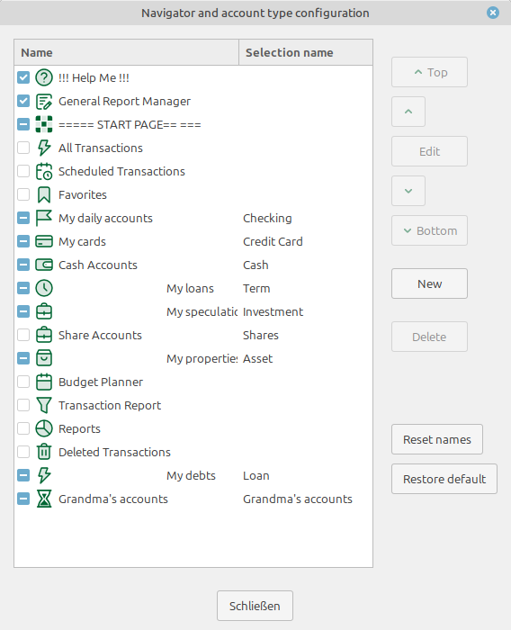
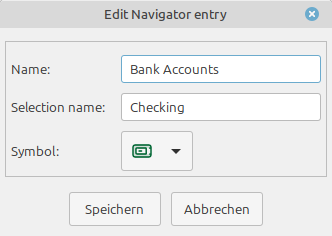
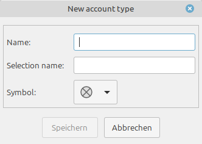
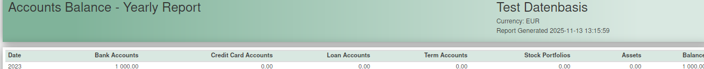
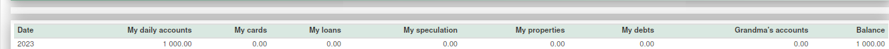

MMEX allows to configure the Navigator by:


The configuration dialog can either be opened in the settings menu Tools → Settings…:

or with a right mouse click on the "Dashboard" item or empty space in the navigator.

To change the navigator item sequence, simply select an item and move it with the help of the Top/↑/↓/Bottom buttons to the desired position.
The sequence of the account items in the navigator, also determines the sequence of options in the account selection dialogs and the sequnce of account types displayed in the home page.
With the Edit Button the editing dialog for the selected item is openend.
In the dialog the name and the icon can be changed.
For (banking) accounts, stock portfolios and assets the selection name, which is used in the "new account creation" and similar dialogs, can be changed.
For navigator items the show state can be changed.
Navigator items, which are not account items can be hidden in the navigator panel by de-selecting them. E.g. An unneeded help function
Account types can not be selected or deselected. They are shown in the navigator if corresponding accounts exists in the desired state (Open or close)
To add a new account type the New button is used, which open an edit dialog for new items:
For a new account type the name has to be specified. Optionally a "selection name" can be set, which is used in the account selection dialogs. If this is omitted the entered "name" is used.
With the Reset names Button the name and icon of the default navigator items is set to the standard configuration. This will not affect the sequence or the custom accounts.
This may be important, if the language of the User interface is changed, because the translation of the default navigator items is not automatically updated.
With the Restore defaults Button the standard configuration of the navigator is recreated. All customization for names, icons and sequence is reset and the custom account types are deleted.
Accounts with a custom account type will be retyped as banking (checking) accounts.
The navigator customization also determines the sequence of accounts used in other places of MMEX:



